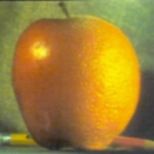

In this project, we used convolution and Gaussian filters to sharpen images, create hybrid images by combining frequency components, and blend images smoothly.
Convolutions from Scratch
In this section, we implement convolution with zero padding using both four and two loops (see code below). We compared our functions with scipy’s convolve2d and found them to be equivalent. The runtimes varied greatly however (30s with four loops, 7s with two loops, 0.2s with convolve2d) and we found that convolve2d also offers different padding types (not just zero) like symmetric padding. Below, we display an image of a crow convolved using the two loop implementation with a box filter and the finite difference operators Dx and Dy.
Finite Difference Operator
In this section, we explore basic edge detection using finite difference operators. First we compute the horizontal and vertical edges of the image by convolving the image with the finite difference kernels Dx and Dy (the partial derivatives). Next we constructed the gradient magnitude image using the Euclidean norm of these two derivatives. Now to produce a binary edge map, we applied a threshold; we selected 75 qualitatively since this threshold removed most of the noise and background while retaining the edges in the main figure and camera. Below we show the horizontal and vertical gradient images, the gradient magnitude image, and the final binary edge map:
Derivative of Gaussian Filter
We noted that the edge map generated using only the difference operator above was somewhat noisy. In this section, we first smooth the image by convolving it with a Gaussian filter (with kernel size 19) before repeating the same edge detection process as in the previous section. We observe that the resulting binary edge map is significantly cleaner, with more clearly defined edge lines and much less noise.
Instead of performing two separate convolutions—first smoothing the image with a Gaussian and then applying the finite difference operator—we achieve the same result in a single step by constructing Derivative of Gaussian (DoG) filters. We do so by convolving the Gaussian with Dx and Dy; we can then apply these DoG filters directly to the image. We see these DoG filters displayed below; we also verify the equivalence of this method with the separate convolution method (the edge maps above and below are the same)!
Image Sharpening
In this section, we sharpen images using the unsharp masking technique.
This involves first convolving the image with a Gaussian filter (with kernel size 9) to create a blurred version.
We then subtract this blurred image from the original, isolating the high frequencies, primarily edges (this is essentially a high-pass filter).
Finally we scale the high frequencies by a factor ùõº and then add them back to the original image, resulting in a sharper final output.
Below we see a blurry Taj Mahal image and two different sharpened versions with ùõº 0.5 and 1.5:
Original Taj Mahal
Sharp Taj Mahal (ùõº = 0.5)
Sharper Taj Mahal (ùõº = 1.5)
We can see how the image with ùõº = 1.5 appears significantly sharper and has more contrast (darker lines and more definition in the image) than the one with
α = 0.5, but also starts to show more pronounced edges and slight artifacts due to over-sharpening.
To further demonstrate the unsharp masking process, below we display a blurry owl image, its high frequencies, and the sharpened version of the image:
Original Owl
High Frequencies of Owl
Sharp Owl (ùõº = 1.0)
Hybrid Images
The goal of this section was to create hybrid images which look like two different images at different distances by combining the low frequencies of one image with the high frequencies of another, following the approach described in the SIGGRAPH 2006 paper by Oliva, Torralba, and Schyns. We start by aligning the images using two-point mappings to account for translation and rotation, ensuring that their key features overlap meaningfully (below we use the left eye and nose as key features).
Once the images are aligned, we convolve the first image with a Gaussian filter to extract its low-frequency components. We compute the high-frequency components of the second image by subtracting the Gaussian blurred version from the original. For each image pair, we manually determined the frequency cutoffs by experimentation. Below we see this process in action to create the classic Derek Nutmeg hybrid image:
Original Derek and Nutmeg
Aligned Derek and Nutmeg
Low Frequencies of Derek
High Frequencies of Nutmeg
Hybrid Derek Plus Nutmeg
Below we look at how the hybrid image was created in the context of Fourier Transform and log frequency spectra. In the frequency domain, the bright center and horizontal and vertical lines of each spectrum represent low frequencies, while the thinner diagonal lines and edges represent high frequencies. On the left, we see the spectra of the aligned images, where Derek’s image contains more low-frequency content and Nutmeg’s contains more high-frequency details. A low-pass Gaussian is applied to Derek’s image to retain only the coarse structure, while a high-pass filter is applied to Nutmeg’s image to isolate finer details. The final hybrid spectrum on the right combines these two: Derek’s low frequencies in the center, and Nutmeg’s high frequencies in the outer regions.
In addition to Derek and Nutmeg, we used this technique of creating hybrid images using low and high pass filters on John Wick and Davy Jones as well as a cauliflower and brain to produce the results below:
Original John Wick
Original Davy Jones
Hybrid Davy Wick
Original Cauliflower
Original Brain
Hybrid Cauliflower Brain
Multi-Resolution Blending
This section focuses on seamlessly blending two images—such as the apple and orange shown below—using the multi-resolution blending technique introduced by Burt and Adelson in their 1983 paper.
We begin by constructing Gaussian stacks for both images by repeatedly convolving with a Gaussian filter, progressively blurring the image at each level to capture increasingly lower frequencies.
Using these, we next generate Laplacian stacks (i.e. frequency bands) for the images.
Each Laplacian level is obtained by subtracting one Gaussian level from the next lower-resolution level in the Gaussian stack.
The final Laplacian level is simply the final Gaussian level. The Gaussian and Laplacian stacks we computed for the apple and orange images are shown below:
Now that we have the Laplacian stacks for both images, we create a mask (linear in this case) that defines which parts of each image to keep.
To ensure a smooth transition, we construct a Gaussian stack of the mask, gradually blurring the mask at each level.
We then combine the Laplacian stacks of the apple and orange images with the Gaussian mask stack.
At each level, we compute the blended Laplacian as:
blend = mask × img₁ + (1 - mask) × img₂
We display the Gaussian stack of masks and the Laplacian combined stack we calculated using this formula below:
Finally, we collapse the blended Laplacian stack by summing its levels to reconstruct the final, seamlessly blended image!
Below, we see the original apple and orange images and the blended oraple!
Original Apple
Original Orange

Blended Oraple
Below we display additional results from blending Batman and Joker as well as blending the Sun and Milky Way (using a nonlinear mask):